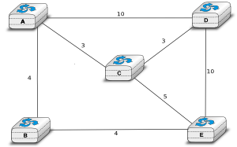

Mission X : The Network Layer, Principles
Ces questions ont pour objectif de vous permettre de tester vous-même votre compréhension de la matière couverte par cette mission de mise en route.
Ces questions supposent que vous avez lu le cinquième chapitre du syllabus contenant l'introduction à la Network Layer.
Question 1. Shortest Path Tree
Analyse the network given. What is the shortest path tree for the router A?


Question 3. Link state routing
Assume that the network from question 1 uses link state routing. After a certain time, all the routers have received all the information about all the routers. Which of these could be a LSP send by one router of the network?
Question 4. Distance vector routing
The routers from question 1 uses distance vector routing. They sends their distance vector regularly over all theirs interfaces. Wich one of these sequences of message could have been generated by the network from question 1?
-
Read Computer Networking : Principles, Protocols and Practice section 5.1.2 : The control plane.
Question 5. Failure with Distance Vector Routing
Consider that the network reach a state where the router A, C, D have receive distance vector from each of them. For an unknown reason, these routers have never heard about B and E. Then, the link between the router A and D fail. What will happen ?
- Routers A and D notice after a sufficient delay (How much ?) that they own a route which is too old. The next distance vector for A will be [A=0, D=inf, C=3] and the next distance vector for D will be [ D=0, A=inf, C=3]. Then C share its distance vector to A and D and the failure is recovered.
- Routers A and D notice after a sufficient delay (How much ?) that they own a route which is too old. The next distance vector for A will be [A=0, C=3, D=inf B=inf, E=inf] and the next distance vector for D will be [D=0, A=inf, C=3, B=inf, E=inf].
- Either router A or router D notice first the failure (let's say that A notice first) and sent its vector routing to the others with inside D=inf. When router C receive the distance vector, it updates its own distance vector and sent it to D. Thanks to that, D notice the failure and update its distance vector to [A=6, C=3, D=0]
It could be useful to read again the chapter Distance Vector Routing, where you will find a complete example about failure. The pseudo-code in this chapter could help you to understand correctly the algorithm.
Question 6. The count to infinity problem
Consider that we have the following network where Distance Vector Routing run and has reach a stable state where all the routers are known with the best route. Which links must fail and which events must occur in order to have a count to infinity problem between router B and E ?
- links A-B, C-E and D-E must fail, then E could notice the failures with the link C-E and D-E. E update its routing table and its vector to [E=0, B=4, A=8, C=inf, D=inf] and sent it to its neighbors (B here). But the vector is lost. B, which doesn't have noticed yet the failure with the link A-B, sent its vector [B=0, A=4, E=4, C=7, D=10] to E. After have send its vector, B notice the failure and update its table routing. The count to infinity appears when B and E start to exchange their vector.
- The link between B and E and the link between C and E must fail, then consider that all message sending by B and E are lost. B and E will have the count to infinity problem when receiving distance vector by A and D respectively.
- links A-B, C-E and D-E must fail then both B and E notice the failures exactely at the same time. The count to infinity problem begin when B and E start to exchange distance vector.
Question 7. Link State Routing
Link state routing is the second type of routing protocols. When a router use link state routing, it sends message on the network. Wich of theses affirmations are corrects?
- A link state router sends periodically a HELLO message to all it's neighbourgs.
- A link-state router sends link-state packets to its neighbours. If this lsp is newer than the one stored in the link state database of the neighbours, they forwards the lsp on all links except the one over which the LSP was received.
- The Link state packet send by a router contains information only about the neighbours of this router.
- A link state router sends periodically a HELLO message to all it's neighbourgs. This HELLO message is forwarded all over the network.
- A link state router sends a HELLO message once when it boots.
- A link-state router sends link-state packets only to its neighbours. (They are not forwarded further)
- When flooding is used on a network, there is a link state database containing the most recent LSP sent by each router shared between all routers.
Question 8. Differencies between Distance Vector Routing and Link State Routing
Distance Vector Routing and Link State Routing are two different protocols. Find the correct affirmations.
- The link state routing uses a shorthest path algorithm.
- Distance vector are never forwarded.
- Link state packets contains the state of directly connected links.
- The count to infinity problem is found in both Distance vector routing and Link state routing.
- Distance vector are flooded on the entire network.
- A router that implement distance vector routing has a database where distance vector are saved.
- A link state packet contains information about the entire topology of the network.
- The link state database eliminates the need of a routing table.
Question 2. Distance vector routing